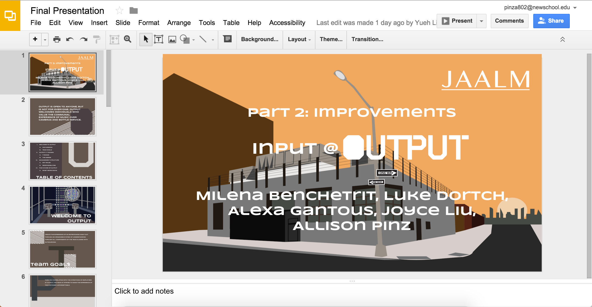
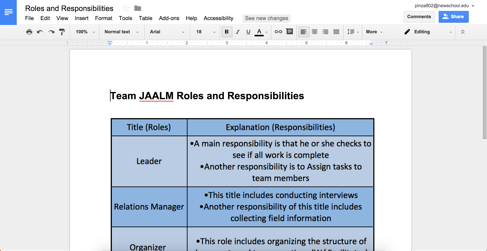
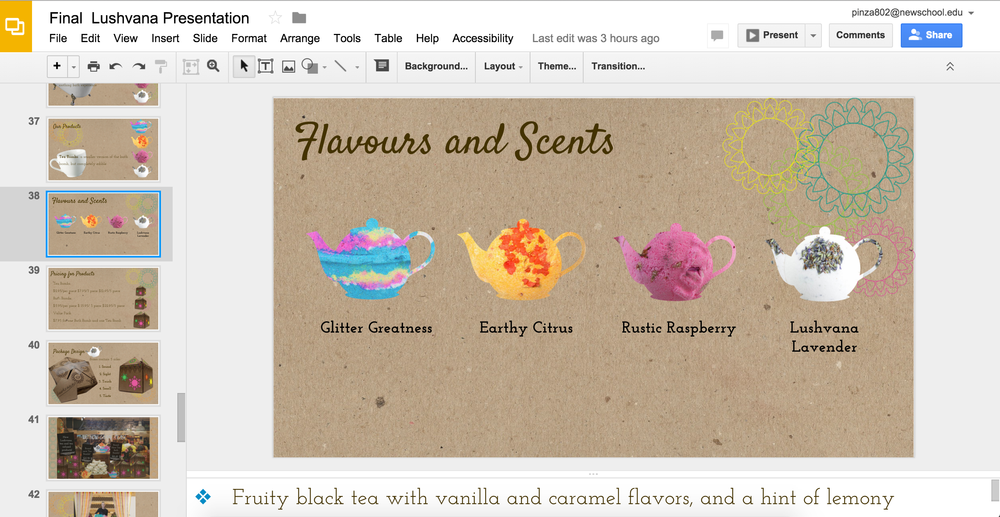
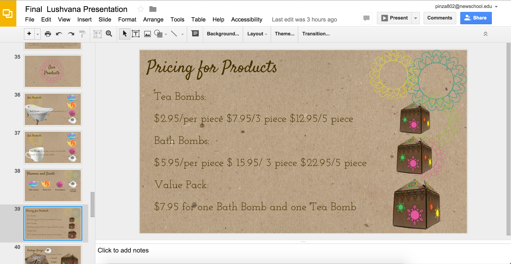
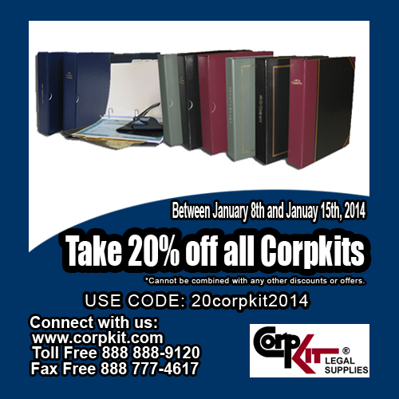
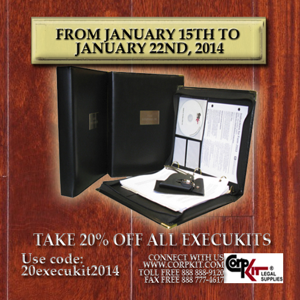
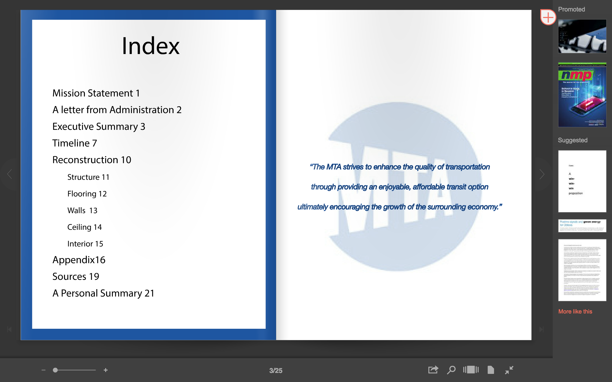
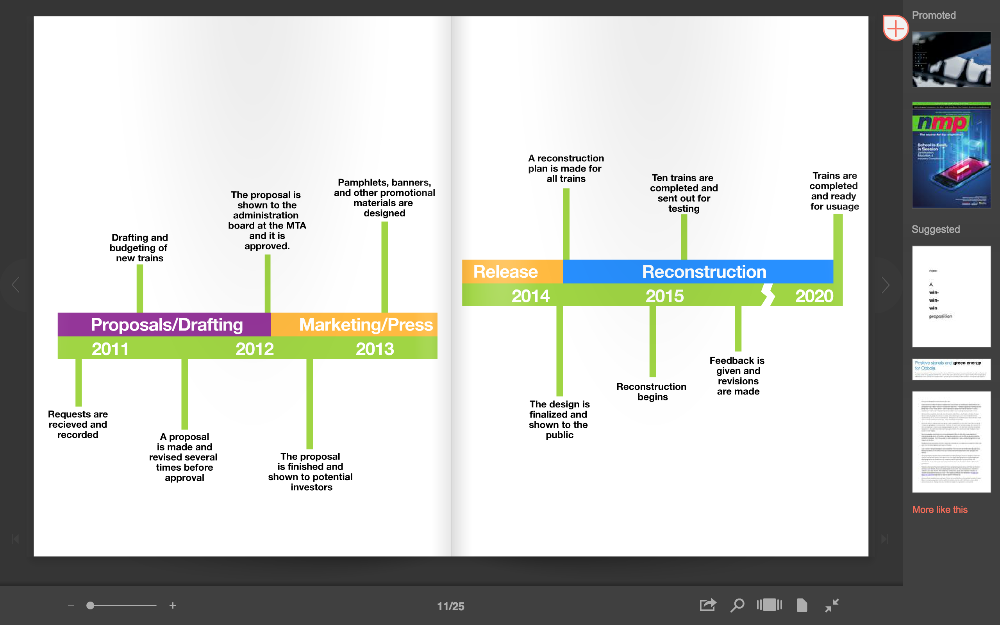
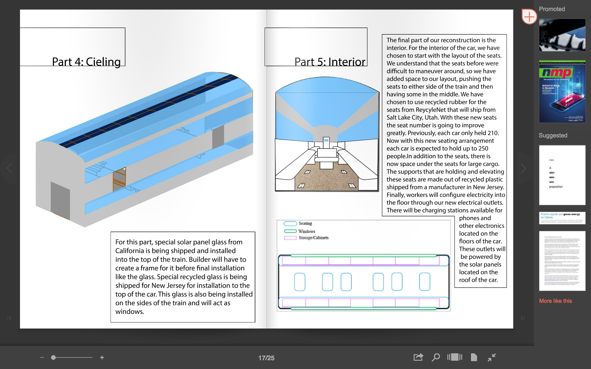
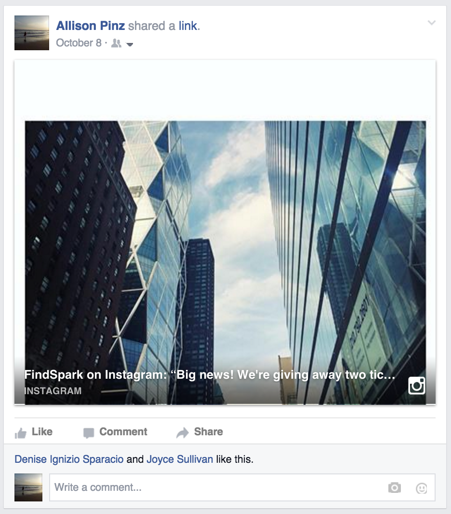

For my Managing Creative Projects and Teams class I was put in a group with 4 other people. We had to observe the team/management structure within a club called Output.
Within this project, we have had to understand what the team does as a whole and how they operate. We gave 3 presentations in all: a pitch presentation, and understanding of the research of the company, and finally, what we would like to improve.
We also worked on team buildng. Team members worked together to learn from each other and build up their teamwirk skills through the two parts of this project.
This project was split up into two parts: Part 1 and Part 2. Part one consisted of our understanding and complete research of the team and how they function. Part 2 focused on what we see that can be different. Through our continued teamwork and understanding of ideas we were able to see how we fundtion ourselves as a group.
We gave interviews to the workers, created structural diagrams, and created a handbook among many other tasks in this project.
We all had our different roles within the group. I was in charge of the design, organizing, and some other smaller tasks.I made sure the presentation looked appealing to the class, put together the structure of meetings, and organized any work that had to be done.
For my marketing class students were put into groups to create a fake branding of a company and give a presentation. My group did a combination of LUSH and Teavana, Lushvana.
For the project, we created several presentations throughout the semester of the logistics of the company. We had a larger final presentation towards the end of the semester.
We studied the customer as well as the brand. Doing surveys, interviews, and ethnographics to get first hand data of LUSH and Teavana.
Our first presentation was on the brand positioning of Lushvana within the market. We saw what its' strengths, weaknesses and opportunities are.
Next was our market research. We did a complete profiling of the customer, studying their habits, lifestyles, and interests to better understand who is the best fit for our brand.
Finally, we compiled all of that information together to create a presentation that goes over Lushvana as a whole. This presentation included all of our previous work as well as some of our work with advertising and marketing. Team members met several times throughout the week, as well as throughout the project, to get everything set for the final presentation. The final presentation consisted of a nearly 50 slide slideshow of our work, as well as 3 package designs.
As a graphic design intern at CorpKit Legal Supplies, it was my job to curate an ad for the sale of that week. I would create all ads on photoshop beofre posting them to the cmpany Facebook page. Below are some additional ads.
I had to keep it professional look while still making an effective apearance to the ad. To do so I used the colors of the products as inspirations and I would use them throughout my ads while there. I used a lot of basic text and shapes so our customers would be able to see it better.
Being that this was my first encounter with typography experimentation, I used different fonts and styles for almost all of my ads. Design was minimal to match the style of the customer base. Once finished after approval, the ads would be posted every week on the company Facebook page.
For my final project in Sustainable Systems I had to come up with one design problem and have a solution for it. My problem was the waster and discomfort that is caused by a train car. I chose to redesign the interior and exterior of a train car that runs for the Long Island Railroad. My solution was to make it more sustainable and to redesign the layout of the seats so it could fit more people.
First I created a proposal paper on my problem. I wrote about the history of the problem and how I intend on fixing it. I went slightly into depth of how I am going to represent my solution, but I am still unsure overall.
Next in class we discussed our ideas. Our teachers helped put us into a direction for the visual component. We started to work.
I chose to do my project entirely on Adobe Illustrator. I wanted to represent my project in a manual that was clear and organized. I did so by first creating an index. The index contained page numbers for the setup of the car, a personal summary, a timeline, and a page of links as well as an appendix. I created diagrams for each of the corresponding images and I presented it to my class.
FindSpark, formerly known as NY Creative Interns, is a small startup company within New York City. As a campus ambassador for FindSpark I was in charge of keeping all of my social media feeds up to date with the latest FindSpark content. This would include posting from events and liking/favoriting posts from others within the community.
I would be in charge of continuously checking my social media feeds and sharing or retweeting any new content the company has to offer, especially when it holds events. FindSpark will hold between 2 and 4 events a month where community member will gather and network. As a campus ambassador it was my job to encourage the use of social media through these events. I would like every tweet and use the networks during virtual events to get the FindSpark name to more people.